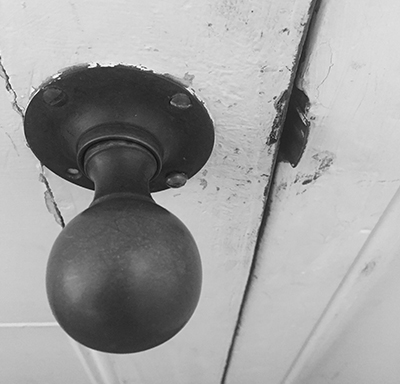
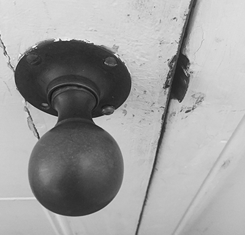
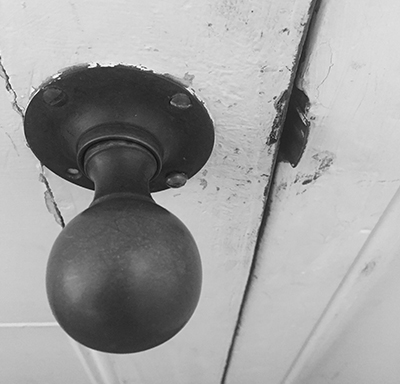

top-link
THE INTERNET
When relating a handle to the internet, it initially might appear to be an irrelevant approach at creating a metaphor, however particular processes hold significance. In the physical world, handles are used for opening and closing content at the users desire. Much like the physical world, a handle in the digital is effectively a means of opening a tab, searching content and selecting pages.
images-link
